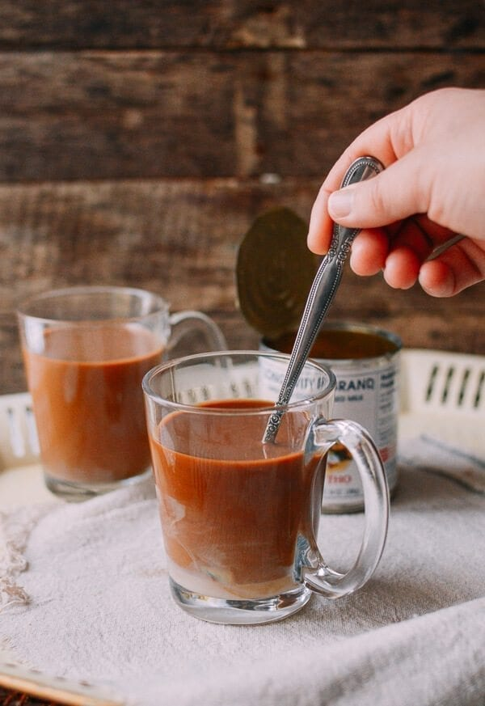

Vietnamese Coffee

Learn how to make Vietnamese coffee (cà phê sữa nóng), a sweet, rich coffee drink involving sweetened condensed milk and strong drip coffee.
Ingredients
- 3 tablespoons Vietnamese ground coffee, such as Trung Nguyen brand, or a quality French roast
- 1-3 tablespoons sweetened condensed milk, to taste
- 6-8 ounces water, near boiling, the lesser amount will make stronger coffee and the greater weaker coffee
Steps
- In a Vietnamese phin coffee filter, add the ground coffee to the filter or the beaker of a french press, taking care not to shake the filter or tamp the coffee grounds.
- Pour the desired amount of condensed milk into a heat-proof glass or mug.
- Place phin over the drinking vessel, if using phin.
- Measure out the desired amount of near boiling water.
- Pour approximately one ounce of the water over the coffee grounds, to "bloom" them.
- Add the rest of the water to grounds, using the phin's press to lightly tamp the grounds, or if brewing in a french press, stirring for 30 seconds.
- Wait for coffee to stop passing through the phin, or wait 5 minutes for coffee to steep in the french press, and then pour into your drinking vessel.
- Stir condensed milk into coffee, and drink while hot, or add ice.